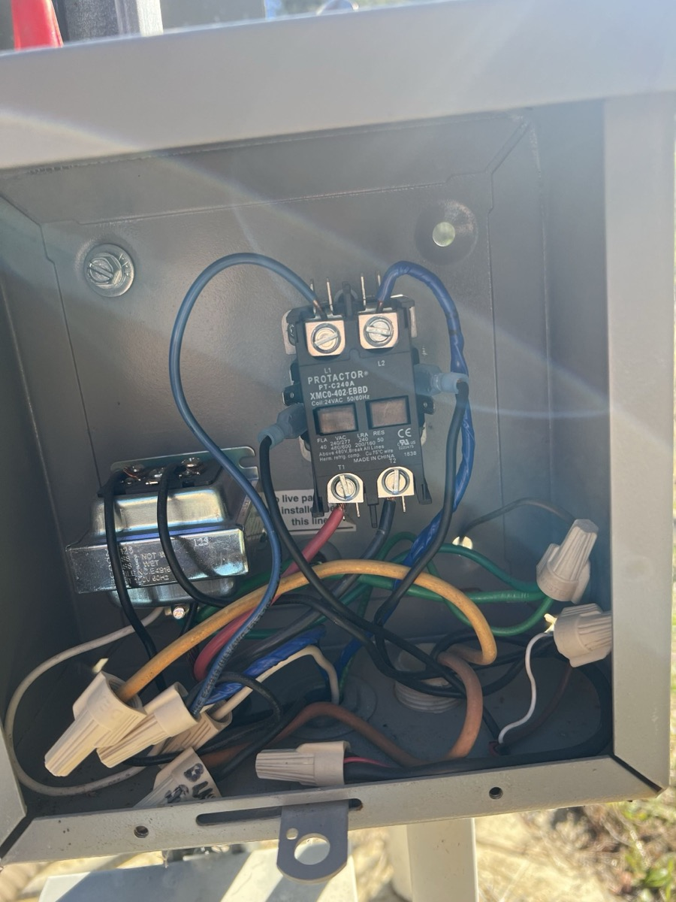

By SCWS Team
Published February 1, 2026 · 9 min read
That new sound from your well system? It's probably a warning. Your pump can't call for help, so it speaks in clicks, hums, and grinding noises. Learn its language—and you might save yourself a $3,000 emergency replacement at 2 AM.
Understanding what these well pump noise problems mean can help you catch minor issues before they become expensive emergencies and know when you need to call a professional immediately.
Quick Reference: Well Pump Sounds
- Steady hum/whir: Normal for jet pumps when running
- Brief click: Normal—pressure switch cycling
- Continuous humming (no water): Emergency—seized pump
- Grinding/screaming: Urgent—bearing or mechanical failure
- Rapid clicking: Pressure tank or switch problem
Normal vs. Abnormal Well Pump Sounds
Before diagnosing problems, it's important to understand what's normal. Your well pump system makes some sounds as part of regular operation—recognizing these helps you identify when something's actually wrong.
Normal Sounds You'll Hear
Jet pumps (installed above ground) produce a steady humming or whirring sound when running. This is the motor operating and is completely normal. The sound should be consistent, not fluctuating or stuttering. Most jet pumps run at about 60-70 decibels—roughly the volume of a normal conversation.
Submersible pumps operate deep underground surrounded by water, so you should hear almost nothing from the pump itself. The only sound from a submersible system is a brief click from the pressure switch when the pump cycles on or off.
Water flow sounds are normal throughout your plumbing when the pump activates. You might hear water rushing through pipes, especially if pipes run through walls near living spaces. A slight pressure tank "thump" when the pump kicks on is also normal.
Sounds That Signal Problems
Any new sound that wasn't there before deserves attention. The key warning signs include sounds that are louder than usual, intermittent or stuttering noises, metallic grinding or scraping, high-pitched whining or screaming, rapid repetitive clicking, or any sound accompanied by reduced water pressure or flow.
Sound Severity Guide
✓ Normal Steady hum, brief click
⚡ Urgent Grinding, louder than usual
🚨 Emergency Humming + no water, screaming, rapid clicking
Common Well Pump Noises and Their Causes

Let's break down the most common well pump noise problems, what causes them, and how serious they are.
Humming Sound
A well pump humming is one of the most common complaints, but its meaning depends on context.
If the pump hums AND produces water: This is likely normal operation for a jet pump. However, if the hum is louder than usual or has changed pitch, it could indicate motor stress from low voltage, a partially blocked impeller, or early bearing wear.
If the pump hums but produces NO water: This is an emergency. The motor is receiving power and trying to run, but something is preventing it from turning properly. Causes include a seized impeller from sediment buildup, a failed start capacitor (motor can't achieve full speed), completely worn bearings, or the pump running dry (no water to pump).
⚠️ Emergency: A humming pump that isn't moving water is overheating. Turn off power to the pump immediately. The motor can burn out within minutes if left running in this condition.
Clicking Sounds
Clicking from your well system usually originates from the pressure switch, not the pump itself.
Single click when pump starts/stops: Completely normal. This is the pressure switch engaging or disengaging.
Rapid, repeated clicking (every few seconds): This indicates "short cycling"—the pump is turning on and off rapidly. The most common cause is a waterlogged pressure tank. When the tank's bladder fails, it can't maintain pressure, causing the pump to cycle constantly. Other causes include a failing pressure switch with burned contacts, a significant leak in the system, or a failed check valve allowing water to flow backward.
Short cycling is extremely hard on pump motors and will dramatically shorten your pump's lifespan. If you hear rapid clicking, stop using water and have the system inspected. Learn more about signs your well pump is failing.
Grinding Noises
Well pump grinding is never normal and always indicates mechanical problems requiring attention.
A grinding sound typically means metal-on-metal contact inside the pump. Common causes include worn bearings that no longer provide smooth rotation, sand or sediment damage to the impeller and pump housing, a bent pump shaft causing the impeller to rub against the housing, or debris caught in the pump assembly.
For submersible pumps, grinding often signals the beginning of the end. The pump may continue working for weeks or months, but failure is coming. For jet pumps, grinding might be repairable if caught early, but often requires pump replacement.
Pro Tip: If your well produces sandy or silty water, consider installing a sediment filter or sand separator. Sand is incredibly abrasive and will destroy pump components over time. See our guide on dealing with sand in well water.
Screaming or High-Pitched Whining
A screaming or high-pitched whine from your well pump is alarming—and it should be. This sound indicates severe mechanical stress.
Possible causes include bearings that are failing catastrophically, a motor running without adequate cooling, the pump cavitating (trying to pump air mixed with water), extreme friction from completely dry running, or electrical problems causing the motor to run at incorrect speed.
This is an emergency situation. Turn off the pump immediately. A screaming pump is either destroying itself or about to. Continuing to run it will guarantee a more expensive repair or replacement.
Banging or Water Hammer
Loud banging sounds in your pipes when the pump cycles is called "water hammer." This isn't actually a pump problem—it's caused by the sudden stoppage of water flow creating a pressure shock wave.
Water hammer can damage pipes, fittings, and the pump over time. Solutions include installing a water hammer arrestor, checking that the pressure tank has proper air charge, adjusting the pressure switch settings, and ensuring the check valve is functioning properly.
When Well Pump Noise Indicates an Emergency
Some sounds require immediate action to prevent expensive damage or complete system failure:
Stop and Call Immediately If You Hear:
- Humming with no water flow — Motor is overheating
- Screaming or loud whining — Catastrophic bearing failure
- Grinding that suddenly stops — Pump may have seized
- Burning smell with any noise — Electrical emergency
- Rapid clicking for more than a few minutes — System damage occurring
In any emergency situation, turn off power to the well pump at the circuit breaker. This prevents further damage and potential fire hazards. Then call a professional—these aren't DIY repairs. Learn more about our well pump repair services or call us for emergency help.
Troubleshooting Steps for Well Pump Noise
Before calling a professional, there are some basic checks you can perform safely:
Step 1: Identify the Source
Is the noise coming from the pump itself, the pressure tank, pipes, or the pressure switch? For jet pumps, you can often pinpoint the location. For submersible pumps, the noise is usually from surface equipment since the pump is underground.
Step 2: Check the Pressure Tank
Tap on the pressure tank. If it sounds completely hollow at the top and full of water at the bottom, the tank is waterlogged and needs replacement or recharging. A properly functioning tank should have air pressure in the upper portion.
Step 3: Inspect Mounting and Connections
Loose mounting bolts can cause vibration and rattling. Check that the pump (for jet pumps) is securely mounted and that pipe connections aren't loose. Vibrating pipes can amplify pump sounds.
Step 4: Check the Pressure Gauge
Note the pressure reading when the pump turns on and off. Abnormal pressure readings combined with noise can help pinpoint the problem. Normal settings are typically 30/50 or 40/60 psi.
Step 5: Listen for Patterns
Does the noise happen constantly, only at startup, or intermittently? Does it correlate with water usage? Patterns help professionals diagnose problems faster.
Repair Costs by Issue
Understanding typical repair costs helps you budget and evaluate whether repair or replacement makes sense:
| Problem | Typical Repair Cost | Urgency |
|---|---|---|
| Pressure switch replacement | $150-300 | High |
| Pressure tank replacement | $300-800 | High |
| Capacitor replacement | $150-350 | High |
| Check valve replacement | $200-500 | Medium |
| Water hammer arrestor | $100-250 | Low |
| Jet pump replacement | $800-1,800 | High |
| Submersible pump replacement | $1,500-4,000+ | High |
| Basic service call (diagnosis) | $75-200 | — |
For a complete breakdown, see our well pump replacement cost guide.
Preventing Well Pump Noise Problems
Many noise issues can be prevented with proper maintenance and system design:
Regular Maintenance
- Annual inspections: Have a professional check your system yearly
- Pressure tank maintenance: Check air charge annually and replace failing tanks promptly
- Listen regularly: Know what normal sounds like so you notice changes early
- Monitor water quality: Test for sand and sediment that damage pumps
System Design Improvements
- Properly sized pressure tank: Larger tanks mean less frequent pump cycling
- Vibration isolation: Rubber mounting pads reduce noise transmission
- Pipe supports: Secure pipes to prevent rattling and water hammer
- Sediment filtration: Protect pump from abrasive particles
- Surge protection: Protect electronics from power spikes
Protect Against Common Causes
Low water levels can cause pumps to run dry—if your area experiences drought, monitor your well's water level. A pump protection device can automatically shut off the pump if water levels drop too low, preventing catastrophic damage. Learn more about protecting your well during drought.
Frequently Asked Questions
Why is my well pump humming but not pumping water?
A well pump humming but not pumping water usually indicates a seized impeller, failed start capacitor, or a motor that's getting power but can't turn. This is an emergency situation—the motor is drawing power and generating heat without cooling from water flow. Turn off the pump immediately to prevent motor burnout and call a professional. Common causes include sediment buildup, worn bearings, or electrical component failure.
Is it normal for a well pump to make noise?
Some noise is normal. Jet pumps make a steady hum or whir when running—this is expected. Submersible pumps should be nearly silent since they operate deep underground. Brief clicking when the pump cycles on/off is normal (that's the pressure switch). However, grinding, screaming, loud banging, or any new unusual sound indicates a problem that needs attention before it becomes a failure.
What does it mean when my well pump makes a grinding noise?
A grinding noise from your well pump typically indicates worn bearings, sand or sediment damage to the impeller, or metal-on-metal contact from failing internal components. For submersible pumps, this sound often means the pump is nearing the end of its life. Continuing to run a grinding pump can cause complete failure within weeks or months. Have a professional inspect and likely replace the pump soon.
Why does my well pump click repeatedly without running?
Rapid clicking (short cycling) usually means your pressure tank has lost its air charge—the bladder or diaphragm has failed. Without proper air pressure, the pump rapidly turns on and off every few seconds. This damages the pump motor and pressure switch. Other causes include a failing pressure switch, leak in the system, or check valve problems. Stop using water and have the pressure tank inspected immediately.
How much does it cost to fix a noisy well pump?
Repair costs depend on the cause. Pressure switch replacement runs $150-300. Pressure tank replacement costs $300-800 installed. Motor or capacitor repairs range from $200-500. If the pump itself needs replacement, expect $1,500-4,000+ for submersible pumps or $800-1,800 for jet pumps including installation. Minor fixes like tightening mounting bolts or adjusting pipe supports cost $75-200 for a service call.
Strange Noises From Your Well Pump?
Don't wait for a small noise to become a big problem. Our experienced technicians can diagnose your well pump noise issues and provide fast, reliable repairs throughout San Diego and Riverside Counties.
Call (760) 463-0493 for Emergency Service